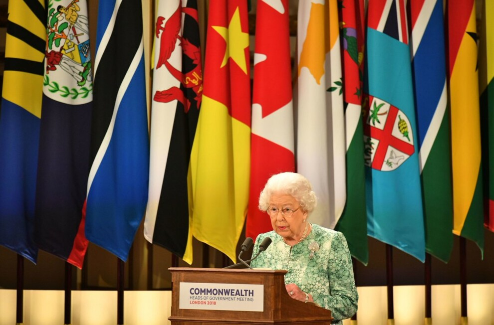
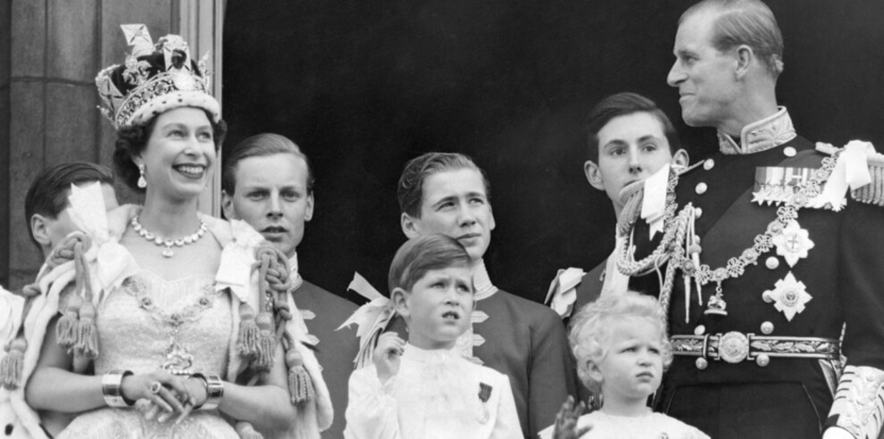

Коронація новоспеченої королеви в 1953 році стала першою подією міжнародного значення, яку транслювали в
прямому
ефірі по всьому світові. Ідея показу церемонії коронації по телебаченню належала герцогу Единбурзькому, і
незважаючи на консервативні погляди в англійському домі, королева дала дозвіл зробити це. А в 1957 році
королева
Єлизавета ІІ вперше сама звернулася до людей в телевізійному форматі, а саме – з різдвяною промовою, відомою як
«Милостива мова Її Величності». І хоча не останню роль в цій ідеї зіграли BBC і, можливо, провідний
«реформатор»
лорд Олтрінхем, цю подію часто називають одним із найбільш значущих способів, якими королева модернізувала
монархію.

Королева Єлизавета II завжди сміливо подорожувала, що зробило її першим британським монархом, який відвідав
зокрема Австралію, Нову Зеландію і Фіджі, а ще – Індію та Пакистан. За час правління королеви чимало
колишніх
колоній вирішили заявити про незалежність, деякі робили це вельми грубо, але 15 з них досі входять до
Королівства Співдружності, у чому, зокрема, велика заслуга цих візитів. Вони були небезпечні, але ними
королева
проявила тверду підтримку й повернула прихильність до себе.
Коли Єлизаветі було всього 10 років, її дядько Едуард VIII зрікся влади, і батько Єлизавети став новим
правителем, а вона – майбутнім корони. Тоді на юну леді звалилася вся відповідальність спадкоємиці. У 13
років
її відправили до віце-ректора приватної чоловічої школи – Ітона – вивчати всі тонкощі британської
конституції,
в 14 – вона виступила зі своєю першою промовою під час «Дитячої години» по радіо BBC, адресованою
евакуйованим
дітям. Єлизавета розуміла, що з часом потрапить у світ чоловіків, тому під час війни постійно спілкувалася з
військовими, а в 1945 році приєдналася до Жіночої допоміжної територіальної служби, де вчилася на
автомеханіка
й водія, – вперше в історії королівської сім'ї жінка служила у військовому підрозділі.
За час правління королеви Єлизавети II світ змінився колосально – від післявоєнного, ще консервативного, до
сучасного, що крокує під руку з технологіями, розвивається і ламає всілякі стереотипи. Найгучнішим доказом
того,
що і королева вміла змінювати свої погляди, став дозвіл на шлюб її онука, принца Гаррі, з Меган Маркл –
розведеною
американкою. Нагадаємо, що півстоліття тому королева не дала згоди на весілля своєї сестри Маргарет з тієї ж
причини – полковник авіації, Пітер Таунсенд, якого та любила, був раніше одружений.
За час правління королева пройшла через безліч нововведень. Зокрема, вона стала першим монархом, який
дозволив
відкрити для людей Букінгемський палац. Вона стала першою, чий уряд очолила жінка, – Маргарет Тетчер. Вона
проявляла чимало підтримки темношкірим: історія запам'ятала її знаменитий танець з Кваме Нкрумою –
революціонером
і прем'єр-міністром Гаани, який допоміг зберегти країну в Співдружностi.
